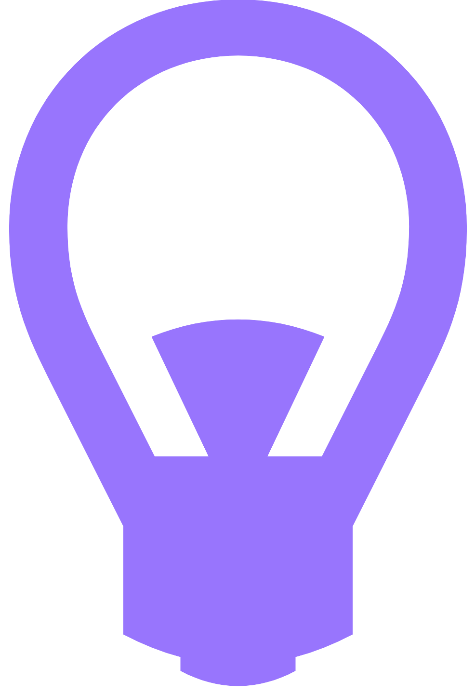

Process
Brainstorming
Brainstorming and testing out concepts based upon the problem statement.

Ideating
Taking brainstormed ideas and ideating them into a low-fidelity prototype. Researching competitors to see what our unique selling point should be, and deciding upon our in-app features.

Prototyping
Prototyping our medium-fidelity prototype based upon the features we had decided to implement.